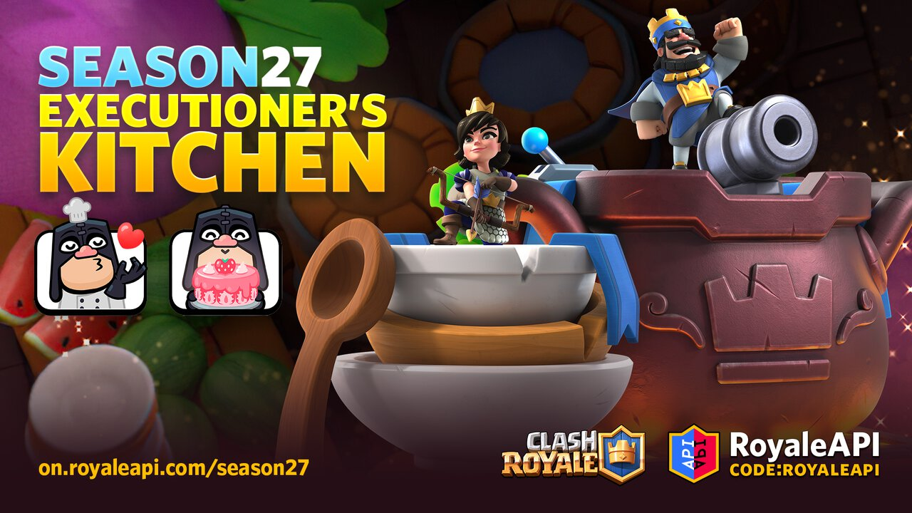
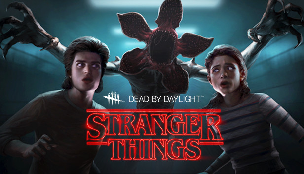

| |
|
|
My name is David Brennan and I am a student at the University of Rhode Island. I am majoring In Computer Science and I commute from Warwick, Rhode Island. At my house I have a garden that I tend to. I grow a variety of vegetables and fruits such as peppers, tomatoes, blueberries, raspberries and basil. In my free time I like to play Dead By Daylight and CLash Royale, I also enjoy youtube and twitch if I am not gaming.  